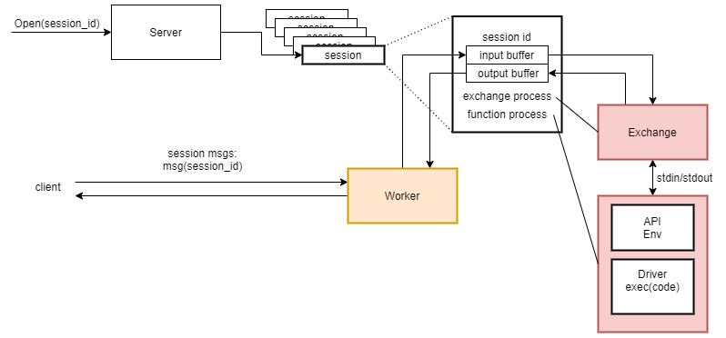

Introduction
Sessions are used to facilitate persistence of data between client and function. Instead of associating a function with a particular TCP stream, session tokens are used. When a client executes a function the server will respond with a session token. If the client promptly disconnects, the function will continue to execute and produce output. To reconnect and begin interacting with the function again, the client will need to present the session token.
Working with Sessions
Sessions are essential to allowing continuous and persistent data exchanges between a user and their function. They let a function be detached from a specific connection. A user can connect, disconnect, and reconnect multiple times and expect their function to continue running. Since the function doesn’t know when a client disconnects, the output data it generates will need to be buffered. Once a client has connected to the session this data buffer can stop accumulating data and start clearing to the client. A new Bento session is created each time a user sends an execute request. When a Bento server receives an execute request it retrieves the function corresponding to the request’s token and creates a new session. The server will then spawn an environment process which actually executes the function code. This process could be a sandbox or container and will define the environment the function executes in. Another process will be created to exchange data between the session’s input/output buffers and the environment’s standard in/out/err.
Creating a Session
The environment process gets passed a driver module and the user’s function code. The driver will parse and execute the user’s function. This way it doesn’t matter if the encapsulating process is a container, sandbox, or just a python interpreter. If there needs to be an update to how functions are executed all that needs to change is the driver. The executing function will be able to reach out to an API that is bundled with the driver. The API abstracts away interacting with standard in/out/err into convenient send and receive functions. This means that users can write functions that don’t need to understand how their function is executing. They just need to use “send()” or “recv()” in their code.

Opening a Session
Once a client sends an open request, the session’s state is set to open. A worker process is created that now completes the other side of the exchange process. As long as the session is open, the worker will send data back and forth between the session’s buffers and the client. The exchange and worker processes act as producers and consumers. When open, the session still buffers data but now that a worker exists the data is instantly consumed and sent to the client. The session stays open until a client disconnects, the function ends, or the client sends a close request. If the session closes while the function is still running all that needs to be done is to kill the worker process. With nothing to continue consuming output from, the session’s output buffer will begin accumulating data again. The exchange runs as long as the function does and will poll intermittently to see whether the environment process has terminated. Once the function terminates the exchange and environment processes can be reaped but there could still be output the client has yet to read. A session is only fully destroyed when the client disconnects with no data left in the session’s output buffer.

Download the source code from Github